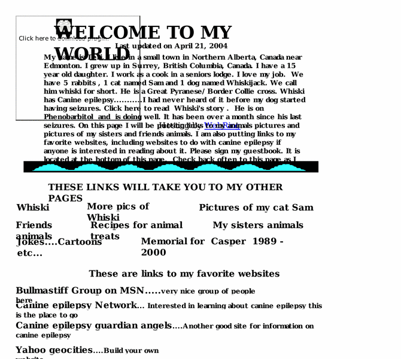

Previewing: Whiski's Homepage Previewing: Whiski's Homepage 
Use the left/right red arrow controls to navigate through this ring - Click the preview image to visit the member site.

This site is dedicated to my dog Whiski. He has canine epilepsy. I also have pictures of my cat and other pets and some friends pets.
Whiski's Homepage owned by:
 whiskijack whiskijack
A member of the original webring since 04/06/2004.
|
|